Kurotaki, Nara: things to do, food and stays
Kurotaki · Nara
Kurotaki
Highlighted on the Nara map.
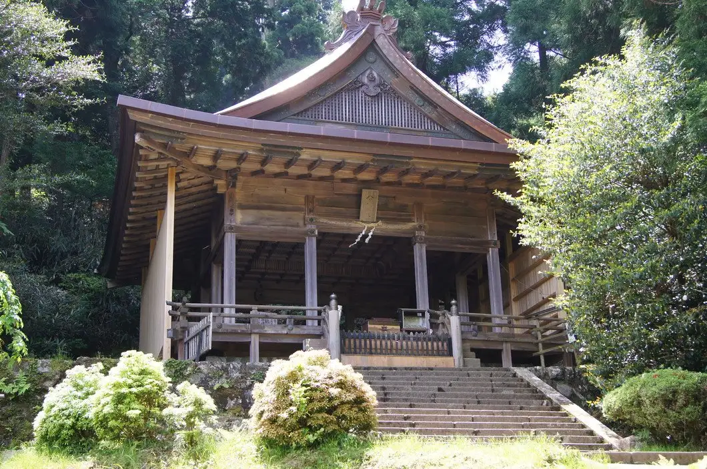
Stay
サウナ＆グランピング ととのい
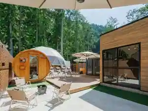
Sauna & Guranpingu Totonoi
Glamping in Dohara, Kurotaki with a sauna.
きららの森・赤岩
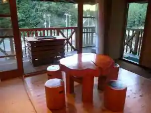
Kirarano Mori Akaiwa
Inn in Nakato, Kurotaki with family-friendly stays.
かくれ里の宿 森の交流館
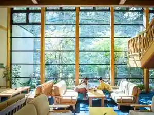
Kakure Sato No Yado Mori No Koryu Kan
Dining
侘助
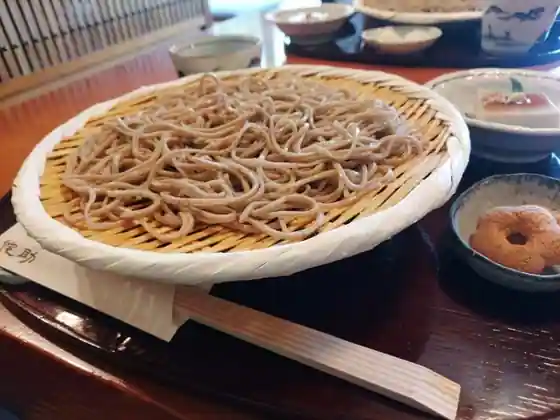
Wabisuke
道の駅 吉野路 黒滝
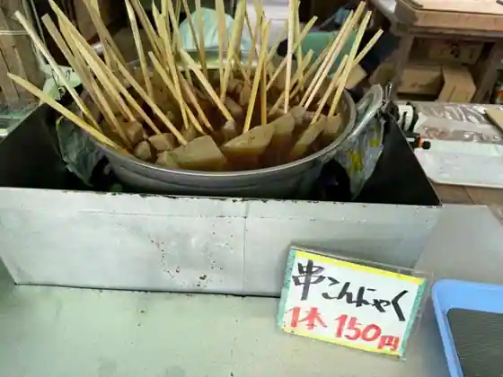
Michi No Eki Yoshino Michi Kurotaki
よもぎの里
Yomogino Sato
黒滝茶屋
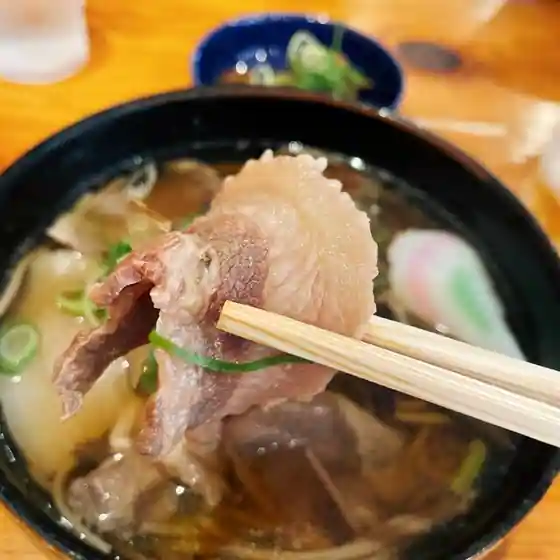
Kurotaki Chaya
森の交流館
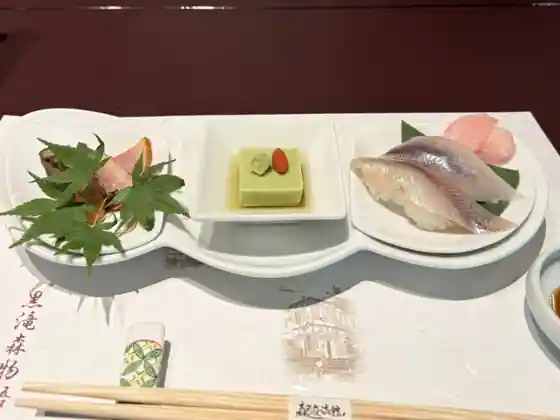
Mori No Koryu Kan
谷本商店
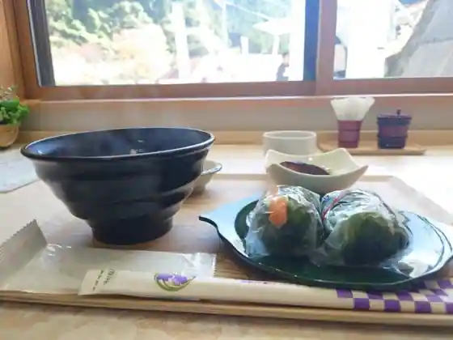
Tanimoto Sho
お食事処 あきちゃん
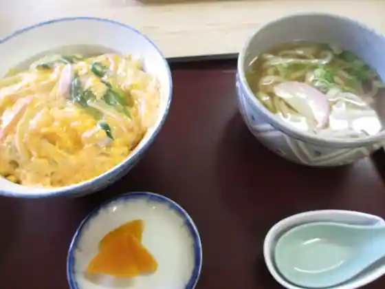
O Shokuji Tokoro Akichan
黒滝森物語村
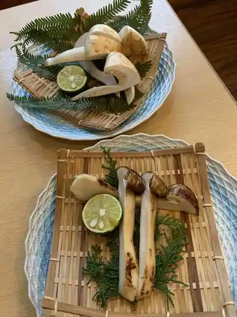
Kurotaki Mori Monogatari Mura
ベーカリー ココ
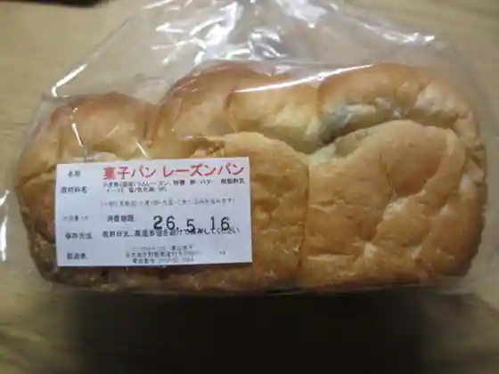
Bakery Koko
柿の葉すし とらせ 本店
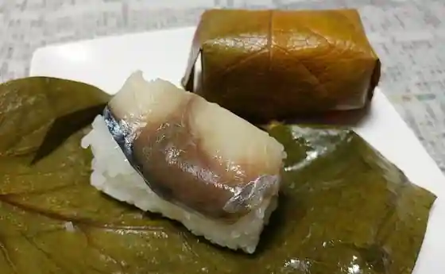
Kaki No Ha Sushi Torase Hon
民宿あきちゃん
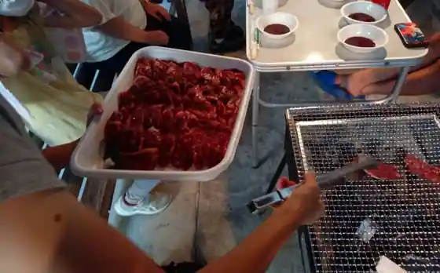
Minshuku Akichan
Sights
Kawa Fun Shrine
Akaiwa Gorge
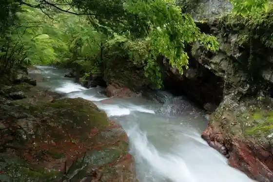
Roadside Station Yoshino Michi Kurotaki
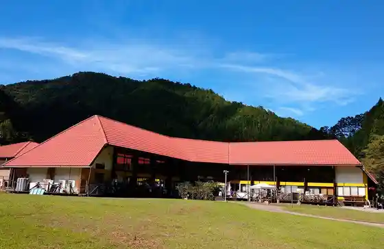
Kurotaki Mori Monogatari Village

Kurotaki Tsuribashi
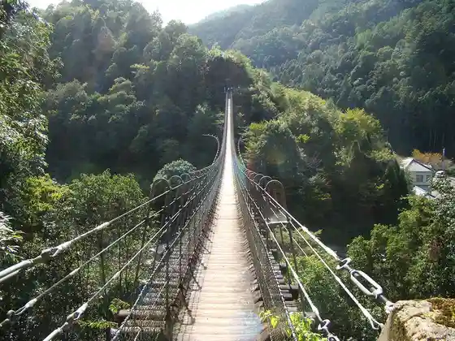